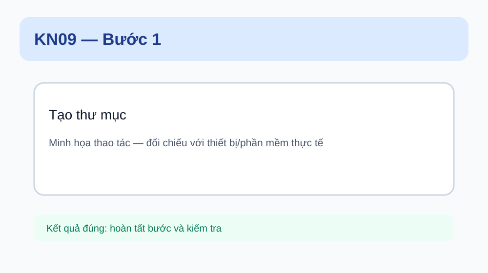

Bước 1. Tạo thư mục
Em làm: Thực hiện đúng thao tác “Tạo thư mục” theo mẫu của giáo viên.

📷 Gợi ý ảnh thật: chụp cận cảnh thao tác và kết quả.
Kết quả đúng: thao tác hoàn tất, kết quả khớp yêu cầu bài.
Nếu sai: dừng lại, kiểm tra lại giá trị/vị trí của bước này và thực hiện lại.